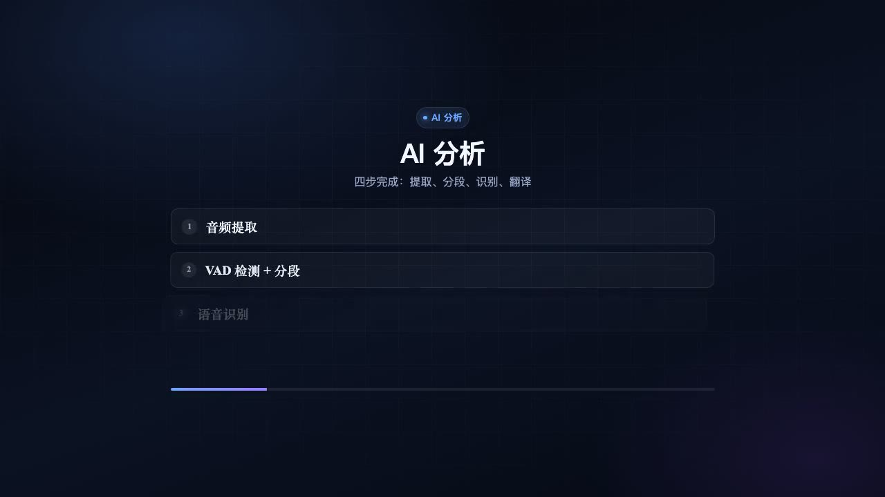
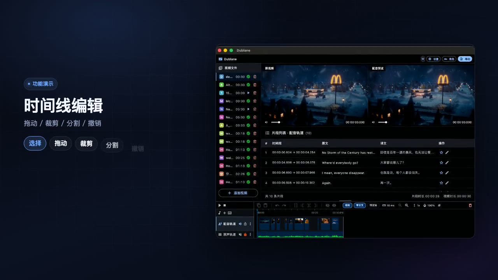
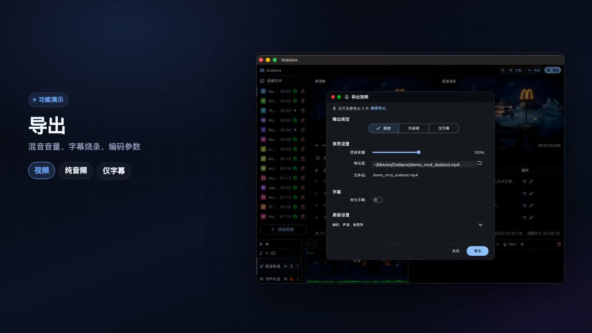
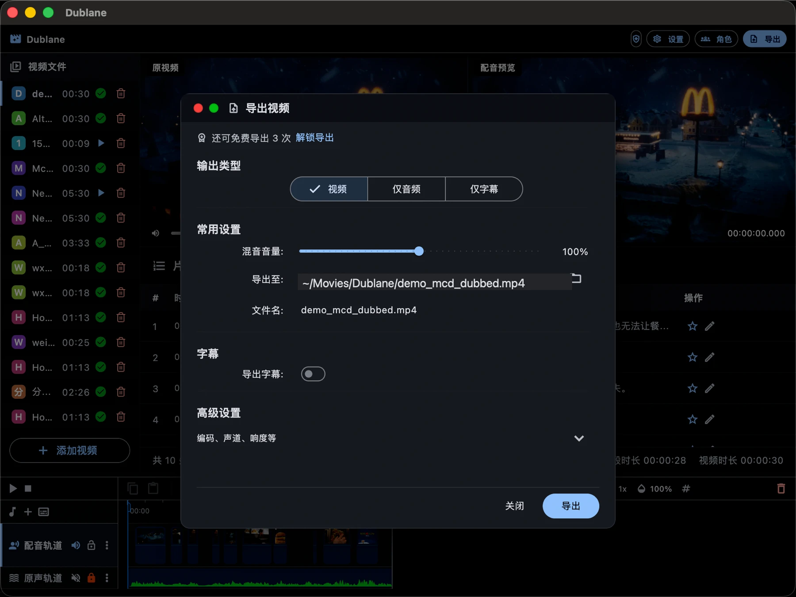
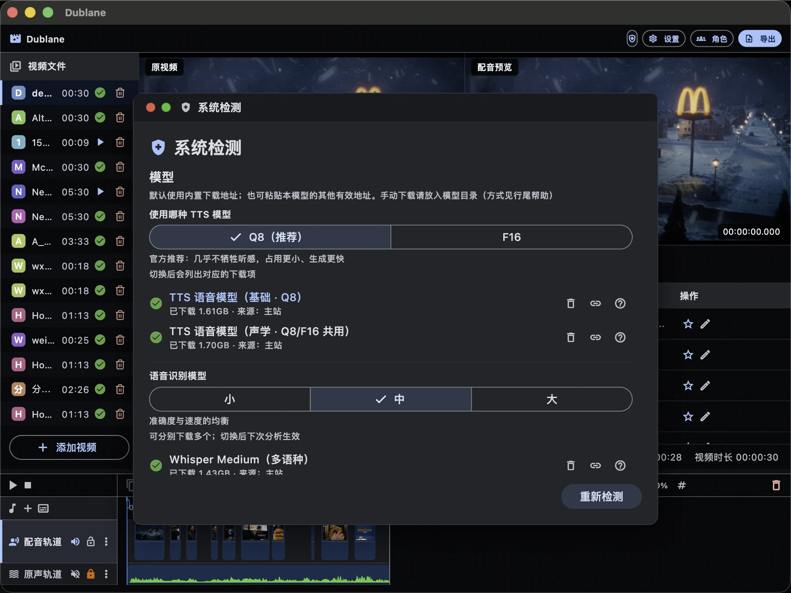
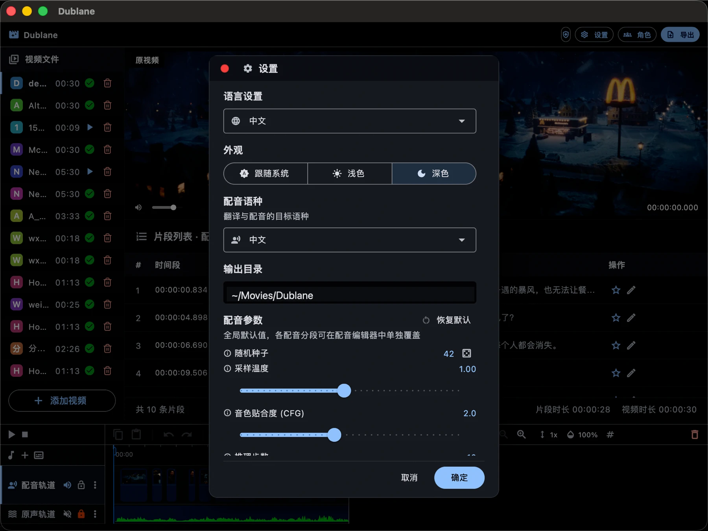

快速开始
三个步骤得到成片。第一次使用前，先在「系统检测」里下载所需的语音模型。
点击左侧视频库下方的「添加视频」，选择本地的视频或音频文件。文件原地读取，不会复制到云端。
点视频行右侧的播放图标，语言选好后「开始分析」。分段、原文和译文会自动填进列表。
在时间线检查节奏与配音，点右上「导出」选择视频、纯音频或字幕。
导入视频
支持常见视频与音频格式，导入后会自动读取时长、生成波形与缩略图。
- 视频：MP4、MOV、MKV、AVI、WebM、M4V 等
- 文件位置：视频保留在原位置，工程数据（分段、配音、字幕）存在应用自己的项目目录
AI 分析
先做四步分析，再按片段生成配音，全部在本机执行。第一次翻译会启动本地模型，通常需要 15–30 秒。

- 识别语言：选视频里实际说的语言；不确定时可以先用自动检测
- 翻译：默认开启，译文写入「译文」列；目标语言在「设置 → 配音语种」里选择
- 配音：分析完成后，在片段编辑器里选好音色，按片段生成配音
- 独立播放预览：从 AI 分析窗口打开，播放时实时叠加项目字幕；可调字体、字号和原文/译文组合，设置按项目保存在
player_subtitles.json，不影响导出样式 - 重新分析：会清理该项目已生成的音频、分段和翻译，再从头跑一遍
时间线编辑
片段块就是配音的时间范围。所有操作都会进入撤销历史，随时可以重来。

- 选择：单击片段；双击可进入片段编辑
- 移动：拖动片段本身；按住 Ctrl 可临时关闭吸附
- 裁剪：拖动片段左右边缘
- 在播放头分割：
][图标；向左 / 向右裁剪：⋮[/]⋮图标 - 合并：选中相邻片段后点合并按钮
- 隐藏 / 恢复：隐藏的片段保留在列表里，随时可以恢复
- 锁定：锁定后不会被拖动或裁剪，避免误改
- 微调：选中片段后按 ← →，步长在工具条里选（默认 10 ms）
- 撤销 / 重做：⌘Z / ⇧⌘Z，也可以走菜单「编辑」
配音与音色
每个片段可以单独选择音色与语速，也可以克隆自己的声音，或叠加音频特效、做人声分离降噪。
- 音色：在片段编辑器里选择角色或应用音色库里的声音，试听后应用
- 克隆音色：导入一段干净的人声（建议 5–30 秒），命名后即可在所有项目里使用
- 角色管理：把音色按项目 / 应用分组，支持头像与试听
- 音频特效：淡入、淡出、淡入淡出、响度标准化、高通（去低频）、低通（去高频）、压缩与混响，可按顺序叠加
- 人声分离降噪：在原声轨或导入轨的轨道菜单里执行，生成「人声」与「伴奏」两条轨道，可去掉背景噪声；录制配音时也能开启降噪
字幕
字幕内容来自片段列表：可以只用原文、只用译文，或两者同时显示。
- 样式：字号、颜色、描边、背景、位置（底部 / 居中 / 顶部）
- 输出方式：烧录进画面、导出单独的 SRT / ASS 文件，或两者都要
- 字体：在导出窗口的「字幕」里选常用中文字体，或点「添加字体」导入自己的 TTF / OTF / TTC；导入的字体可以随时删除
导出
三种输出类型：完整视频、纯音频、仅字幕文件。

- 混音音量：0–200%；超过 200% 会自动挂限幅器，避免削波
- 字幕：可烧录、可导出 SRT，也可以两者都保留
- 高级设置：编码、声道、响度等参数在「高级设置」里展开
- 画面：H.264 或 HEVC；分辨率可跟随源或自定义，保持比例会加黑边，拉伸填满则不加；帧率、质量或目标码率（含最大码率与缓冲区）都可调，并显示预估大小
- HDR：HDR 源用 HEVC 10 位输出可保留 BT.2020/PQ；H.264 或 8 位输出会转为 SDR（BT.709），导出前会再确认一次
- 次数：免费版可导出 5 次；Pro 解锁后不限次数

轨道与视图
多轨视图里可以快速调整编辑密度和显示细节。
- 轨道高度：工具条里的高度按钮，1x / 1.5x / 2x
- 横向缩放：1x 到 8x，方便对齐很短的片段
- 波形透明度：工具条右侧的百分比，调整片段内波形的浓淡
- 片段编号：# 图标按钮，打开后所有轨道的每个片段都显示序号；关闭时不显示
- 监听 / 静音：轨道头的耳机图标决定该轨是否进入预览与导出混音
系统检测与模型
顶部盾牌图标进入「系统检测」：检查内置工具，并管理需要下载的模型。

- TTS 模型：Q8（更小更快）或 F16（更大更精细），声学模型两者共用
- 语音识别：Small / Medium / Large，按机器性能选择；可以只下当前要用的
- 翻译模型：可选；不下载也能用，翻译前会要求同意 Gemma 使用条款
- 删除模型：已下载的行点垃圾桶图标并确认，文件会从磁盘移除，需要时可重新下载
- 下载地址：默认走内置地址；国内网络可在每行的链接图标里改成镜像或自己的地址
设置
语言、外观、配音目标语种和默认参数都在这里。

- 界面语言：跟随系统或手动指定，立即生效
- 配音语种：翻译与配音的目标语种
- 输出目录：导出的默认位置
- 配音参数：随机种子、采样温度、音色贴合度（CFG）；单个片段可以在编辑器里覆盖
快捷键
在时间线或片段列表里使用；文本输入框获得焦点时，快捷键交给输入框处理。
| Space | 播放 / 暂停 |
| ⌘Z / ⇧⌘Z | 撤销 / 重做片段操作（文字输入框里是文本撤销） |
| ⌘C / ⌘V | 复制 / 粘贴片段（文字输入框里是文本复制粘贴） |
| ← / → | 按工具条的步长微调选中片段 |
| Esc | 退出全屏预览 |
常见问题
预览提示「需要重新打开」怎么办？
通常是源文件被移动、重命名，或 macOS 在应用更新后收回了文件权限。点提示里的「重新选择文件」， 选中同一个文件即可恢复；已有的轨道、分段和配音不会丢失。
开始分析时提示缺少模型？
打开顶部盾牌图标进入「系统检测」，在对应的模型行点「下载」。第一次下载量较大，建议在稳定网络下进行； 下载完成后状态会变成「已下载」。
免费版有什么限制？
免费版可以导出 5 次完整成品；Pro 解锁后不再限制次数。所有模型、分析和编辑功能不受影响。
译文的目标语言在哪里改？
「设置 → 配音语种」。改了之后，重新运行翻译或重新分析，就会按新的目标语言生成译文和配音。
没网还能用吗？
可以。模型下载完成后，分段、识别、翻译、配音与导出都在本机运行，不需要联网。
视频和音频会被上传吗？
不会。Dublane 不提供账号系统，也不会上传素材；除下载模型外，应用不需要访问外网。详见 隐私政策。